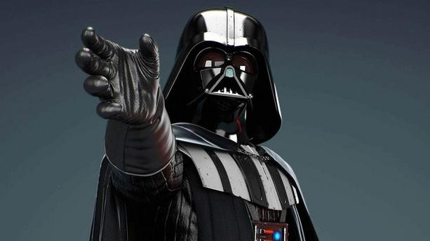

Darth vader is a main charachter in star wars. his is know for his evil power and his hate against the rebels. Even though he hates the rebel alliance he is was once part of the rebelian republic. Darth vadar is really known as Ankin skywaler before he became darth vadar he served as a jedi helping out the people in the galaxy and keeping people safe. Until he got to focused on just wanting more power. Which turned him into the dark side. The reason he wears that suit its because it protects him from dying and allows him to be able to breath.He got into a fihgt with his old master but got beatten by him. obi wan threw him into a lake full of lava, leaving him to die, until emperior palpetine rescued him and recovered he and saved him but needs to stay in that suit in oreder to leave. Ever since he become one with the dark side he has caused major destruction throughout the galaxy. a he becomes more and more powerfull conquring plantes all around the galaxy.
 Luke Skywalker Page 2